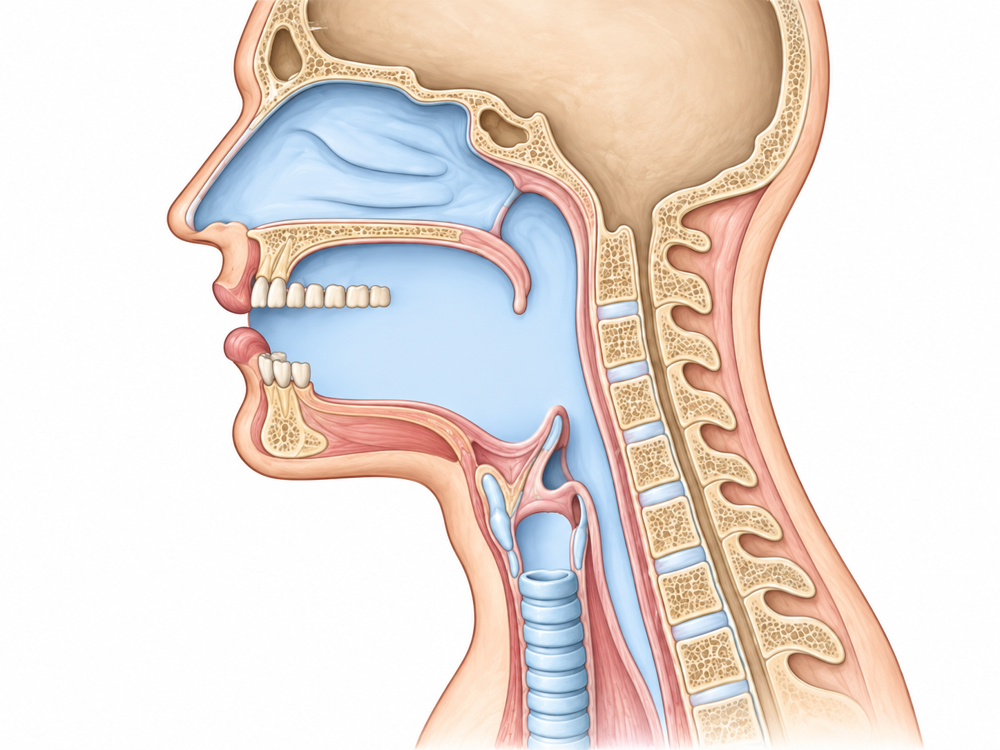

A
矢状剖面
拖动亮色节点改变构形

当前元音
[a]
开口 · 央元音
器官色块随参数变化 · 淡线为中性参考位置
元音教学锚点点击恢复完整基准构形；位置为典型近似，并非每个人唯一答案
选好元音后，向下滑即可调节参数；发声时可连续听到变化。
B
构形参数
TEACHING REFERENCE · 非歌者实测经典意大利男高音构形优先按当前元音录音标注的音高载入教学估算参数；保留当前声线，不改变录音原音高。
这些参数从哪里来？
数值来源：本项目先用五个元音的教学锚点，人工设定 C4 下的 0–100 构形数值；当前元音有录音音高标注时，按该音高作有限幅度的教学推算；没有标注时才用手动录音目标音高。它们不是帕瓦罗蒂或某位男高音的测量数据，也不是论文给出的标准比例。
研究能支持什么：舌、颌、唇与声道形状会影响共振峰；训练歌者会随音高调整元音和声道构形。研究支持方向和机制，不能把某一套 0–100 数值规定为所有人的正确答案。
SAMPLE-PITCH COMPARISON同音高·参数对比
C4 · 261.63 Hz · 录音目标 · [a]当前构形经典男高音
左侧是当前滑杆值，右侧是按当前元音音高推算的教学参考；不是男高音实测数据，也不会改变录音。
构形记录0 个快照
保存一个构形，开始 A/B 比较。
C
LIVE
声学观察
F0基频
220Hz
样本基频估计
F1第一共振峰
800Hz
舌高 · 开口
F2第二共振峰
1200Hz
舌位前后 · 唇形
F3第三共振峰
2500Hz
音色 · 明亮度
F 是 Formant（共振峰）的缩写：F0 是基频（你唱的音高）；F1/F2/F3 是声道放大的三个共鸣频率，共同决定元音音色。点击任意一张卡片，在这里查看解释。
IPA 元音空间F2 ← / F1 ↓
实时频谱 · 三维0 — 5 kHz · 竖线标出 F1/F2/F3
F1
F2
F3
1005001k2k3k5k Hz
录音文件分析我的声线 · [a]
- 录制时目标
- —
- 样本标注 F0
- —
- 音高波动
- —
- 素材来源
- 本地精选素材
上方 F0 取当前元音样本的基频分析值；F1/F2/F3 随构形变化，是实时教学估计。旧版内置样本若无音高波动记录，会如实显示“未记录”。
教学近似模型 · 数值用于构形比较，不替代临床或实验室测量。